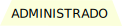
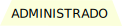

Modelos de Desarrollo de Software
Índice
Modelo Escalonado Modelo en V Modelo Iterativo Modelo Versionado Modelo Espiral Modelo ContinuoModelo Escalonado
Este modelo sigue una estructura jerárquica en la que cada fase del desarrollo debe completarse antes de pasar a la siguiente. Es ideal para proyectos bien definidos con requisitos estables.
Estructura en niveles: Se organiza en varias etapas interdependientes que avanzan progresivamente.
Validación constante: Cada fase se revisa y valida antes de pasar a la siguiente.
Desarrollo secuencial: No se salta ninguna etapa, lo que garantiza control y calidad.
Ideal para proyectos grandes y complejos: Se usa en sistemas donde la estabilidad y la documentación son clave.
Pruebas en cada etapa: Se incluyen pruebas en cada nivel, reduciendo errores al final del desarrollo.
 

Modelo en V
El Modelo en V es una variante del modelo en cascada que enfatiza la validación y verificación en cada fase del desarrollo de software.
Fases del Modelo en V
- Estudio de Requisitos: Definición de los requerimientos del software.
- Diseño del Sistema: Arquitectura general del sistema.
- Diseño de Arquitectura: Estructura y componentes del software.
- Diseño Detallado: Especificaciones técnicas.
- Codificación: Desarrollo del software.
- Pruebas Unitarias: Verificación de módulos individuales.
- Pruebas de Integración: Verificación de interacción entre módulos.
- Pruebas de Sistema: Validación del sistema completo.
- Pruebas de Aceptación: Evaluación por parte del usuario.
Ventajas
- Mayor calidad en el desarrollo.
- Facilita la detección de errores en cada fase.
- Ideal para proyectos con requisitos bien definidos.
Desventajas
- Rigidez en cambios durante el desarrollo.
- No es adecuado para proyectos ágiles.
- Mayor costo si se requieren modificaciones.
Modelo Iterativo
En este modelo, el desarrollo se realiza en ciclos repetitivos donde se implementan mejoras progresivas en el producto. Permite flexibilidad y ajustes sobre la marcha.
Características Principales
- Ciclos Repetitivos: El desarrollo se divide en iteraciones cortas.
- Flexibilidad: Permite ajustes y cambios durante el desarrollo.
- Entrega Incremental: Se entregan versiones funcionales del software en cada iteración.
- Retroalimentación Continua: Se recibe feedback constante del cliente.
Ventajas
- Adaptable a cambios en los requisitos.
- Entrega temprana de funcionalidades.
- Reducción de riesgos al validar cada iteración.
Desventajas
- Requiere una planificación cuidadosa.
- Puede ser costoso si no se gestiona bien.
Modelo Versionado
Este modelo divide el desarrollo en versiones, lo que permite la entrega gradual de nuevas funcionalidades y mejoras continuas sin afectar la estabilidad del software.
Características Principales
- Versiones Estables: Cada versión es funcional y estable.
- Entrega Gradual: Nuevas funcionalidades se añaden en versiones posteriores.
- Mejora Continua: Se corrigen errores y se optimiza el software en cada versión.
- Compatibilidad: Se asegura que las nuevas versiones sean compatibles con las anteriores.
Ventajas
- Entrega de valor incremental.
- Mayor estabilidad en cada versión.
- Fácil mantenimiento y actualización.
Desventajas
- Requiere una gestión cuidadosa de versiones.
- Puede generar dependencia entre versiones.
Modelo Espiral
Combina características del modelo iterativo y en cascada, con un fuerte enfoque en la gestión de riesgos. Se repite en ciclos llamados "vueltas de la espiral".
Características Principales
- Ciclos de Desarrollo: Cada vuelta de la espiral representa una fase del proyecto.
- Gestión de Riesgos: Se identifican y mitigan riesgos en cada ciclo.
- Flexibilidad: Permite adaptar el proyecto según los resultados de cada ciclo.
- Integración de Modelos: Combina lo mejor del modelo iterativo y en cascada.
Ventajas
- Enfoque en la gestión de riesgos.
- Adaptable a proyectos complejos.
- Permite retroalimentación constante.
Desventajas
- Puede ser costoso y lento.
- Requiere experiencia en gestión de riesgos.
Modelo Continuo
Optimiza el flujo de desarrollo mediante la integración y entrega continuas, lo que permite actualizaciones rápidas y frecuentes del software.
Características Principales
- Integración Continua: El código se integra y prueba automáticamente.
- Entrega Continua: Se liberan versiones del software de manera frecuente.
- Automatización: Se automatizan tareas repetitivas como pruebas y despliegues.
- Rapidez: Permite una respuesta rápida a cambios y errores.
Ventajas
- Reducción de errores.
- Entrega rápida de nuevas funcionalidades.
- Mayor eficiencia en el desarrollo.
Desventajas
- Requiere infraestructura robusta.
- Dependencia de herramientas de automatización.